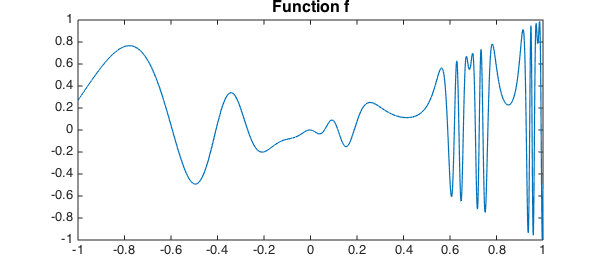
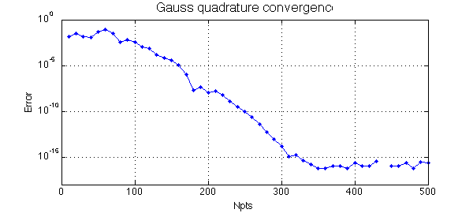
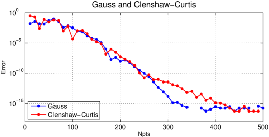

Suppose you have a function $f$ on an interval:
x = chebfun('x');
f = @(x) x.*sin(2*exp(2*sin(2*exp(2*x))));
fc = chebfun(f);
LW = 'linewidth'; FS = 'fontsize'; MS = 'markersize';
figure, plot(fc,LW,1.2)
title('Function f',FS,16)

In Chebfun you would normally compute the integral like this:
format long Ichebfun = sum(fc)
Ichebfun = 0.336732834781728
Chebfun's method is Clenshaw-Curtis quadrature, i.e., the integration of the polynomial representing $f$ by interpolation or piecewise interpolation in Chebyshev points. Here is the number of quadrature points:
Npts = length(fc)
Npts = 659
If we wanted, we could also perform the integration by explicitly extracting the Clenshaw-Curtis nodes and weights, like this:
[s,w] = chebpts(Npts); Iclenshawcurtis = w*f(s)
Iclenshawcurtis = 0.336732834781727
Or we could try Gauss quadrature with the same number of points and weights.
[s,w] = legpts(Npts); Igauss = w*f(s)
Igauss = 0.336732834781728
Though this value of Npts is in the hundreds, Chebfun can handle values in the millions without difficulty. This is achieved by the algorithm of Hale and Townsend [1]. See the Example quad/GaussQuad.
Let's take a look at the accuracy as a function of Npts. Gauss quadrature converges geometrically, since $f$ is analytic ([1], Theorem 19.3).
figure, tic, err = [];
NN = 10:10:500;
for Npts = NN
[s,w] = legpts(Npts);
Igauss = w*f(s);
err = [err abs(Igauss-Ichebfun)];
end
semilogy(NN,err,'.-',LW,1,MS,16), grid on
ylim([1e-18 1])
xlabel('Npts',FS,12), ylabel('Error',FS,12)
title('Gauss quadrature convergence',FS,16), toc
Elapsed time is 0.333560 seconds.

Let's add another curve to the plot for Clenshaw-Curtis:
hold on, tic, err = [];
for Npts = NN
[s,w] = chebpts(Npts);
Iclenshawcurtis = w*f(s);
err = [err abs(Iclenshawcurtis-Ichebfun)];
end
semilogy(NN,err,'.-r',LW,1,MS,16)
title('Gauss and Clenshaw-Curtis',FS,16)
legend('Gauss','Clenshaw-Curtis','location','southwest'), toc
Elapsed time is 1.089475 seconds.

Clenshaw-Curtis quadrature also converges geometrically for analytic functions ([1], Theorem 19.3). In some circumstances Gauss converges up to twice as fast as C-C, with respect to Npts, but as this example suggests, the two formulas are often closer than that. The computer time is often faster with C-C. For details of the comparison, see [2], [4], and Chapter 19 of [3].
References
-
N. Hale and A. Townsend, Fast and accurate computation of Gauss-Legendre and Gauss-Jacobi quadrature nodes and weights, SIAM Journal on Scientific Computing, 35 (2013), A652-A672.
-
L. N. Trefethen, Is Gauss quadrature better than Clenshaw-Curtis?, SIAM Review 50 (2008), 67-87.
-
L. N. Trefethen, Approximation Theory and Approximation Practice, SIAM, 2013.
-
J. A. C. Weideman and L. N. Trefethen, The kink phenomenon in Fejer and Clenshaw-Curtis quadrature, Numerische Mathematik, 107 (2007), 707-727.